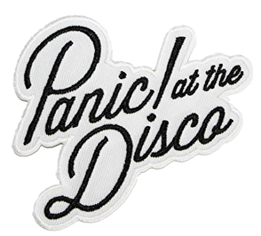

Panic! At the Disco (с англ. — «Паника! На дискотеке»)
— американская рок-группа из Лас-Вегаса, штат Невада.

Музыкальные критики причисляли группу ко многим различным стилям.
В частности, поп-панку, поп-року и инди-року, а альбом Pretty. Odd.
вообще окрестили как барокко-поп. Однако, сами ребята считают, что это
глупо, приписывать их группу к каким-то определенным стилям. Panic! At
the Disco уходили на запись альбома, многократно упоминая, что второй
альбом группы будет в корне отличаться от A Fever You Can’t Sweat Out.
Группа ассоциирует своё текущее направление с песней «Nine in the Afternoon»
— «Она была написана под влиянием музыки, которую слушали наши родители:
The Beach Boys, The Kinks, The Beatles» — говорит Райан, — «Наши новые
песни и музыка больше похожи на классический рок, чем на современный. Мы
стали старше, слушаем разную музыку — и это, естественно, влияет на нас».
Группа была основана в Саммерлине (Summerlin), провинциальном районе
Лас-Вегаса, двумя друзьями детства — гитаристом Райаном Россом и
барабанщиком Спенсером Смитом. Когда обоим было по 13, друзья перепевали
песни Blink-182 с разными составами группы. Затем Смит и Росс создают
новую группу под названием «Pet Salamander» с двумя другими друзьями,
Брентом Уилсоном и гитаристом Тревором Хауэллом, который позже оставил
группу.
Уилсон встретил будущего вокалиста Panic! At the Disco в своей школе
Palo Verde High School. До прихода в их команду Брендона Ури, группа
именовалась Summer League, может быть, в связи с названием города, в
котором они жили. Но, по решению Брендона, группу переименовали в Panic!
At the Disco. В то время, Уилсон просит Ури заменить гитариста в их ещё
не сформировавшейся группе. Первоначально, Ури не был ведущим певцом
в их коллективе. Это место принадлежало бывшему гитаристу и автору
песен Райану Россу. Однако, во время репетиции, когда ребята услышали
голос Брендона, являвшегося ещё и бэк-вокалистом, были впечатлены его
вокальными данными и единодушно решили сделать его певцом. Группа затем
поменяла своё название на «Panic! At The Disco», взятое из строчки песни
«Panic» группы Name Taken. Хотя группа часто говорит, что название пришло
к ним из песни «Panic» группы The Smiths. Это объясняется тем, что песня
Смитов легче воспринимается людьми, не знакомыми с творчеством группы
Name Taken, которая также повлияла на их название.
Группа связалась с басистом Fall Out Boy Питом Вентцем при помощи
LiveJournal и отправила ему ссылку на их страницу на PureVolume. Вентц
совершил поездку в Лас-Вегас, чтобы встретиться с группой. После
прослушивания группы вживую, Пит предложил ребятам подписать контракт
с его собственным музыкальным лейблом Decaydance.
Panic! At the Disco выпустили дебютный альбом «A Fever You Can't Sweat Out»
27 сентября 2005, опираясь в раскрутке на сайты PureVolume и MySpace. Они
достигли неплохого коммерческого успеха для начинающей группы. После
представления «Топ-10 артистов», имеющих контракт со звукозаписывающей
компанией, составленного на сайте PureVolume, и достигнув первой строчки
в чартах на MySpace.com, Panic! At the Disco появились на MTV’s Total Request
Live 17 января 2006, где состоялась премьера клипа на песню «I Write Sins Not
Tragedies».
Показав в Lucent Dossier Vaudeville Cirque видео, в котором главными
темами являются свадьба и цирк, видеоклип дебютировал на 10-е место в
обратном отсчете TRL, а позже завоевывал награду MTV Video Music Awards
(«Видео Года») в 2006.
Сама песня оказалась не менее успешной и в течение месяца поднялась
на вершину «Hip Clipz» на веб-сайте Curly Grrlz Skateboards. Сингл,
выпущенный 27 апреля 2006 года, добрался до 7-й строчки американских чартов.
Позже вышел клип «What We're All About», это изменённая версия песни
«Dave’s Possessed Hair/It’s What We’re All About» из мини-альбома «Half Hour of
Power», в изменённой версии на гитаре играет соло, а в клипе появляется Керри
Кинг из Slayer. Песня вошла в саундтрек к фильму Человек-паук и звучала в
финальных титрах фильма.
Второй сингл, «But It's Better If You Do», был выпущен в Великобритании 1
мая 2006 и достиг высшей точки под #23. Видео на песню «But It’s Better If
You Do» показывает группу, которая, по словам Ури, отображает «темный и
изолированный стиль Паники». Группа объявила об уходе басиста Брента Уилсона
на официальном сайте 17 мая 2006. Уилсон с тех пор утверждает, что решение
уйти было не его личным, а что его уволили, не предупредя о денежно-кредитных
причинах, хотя остальная часть группы все отрицает. Уилсон потребовал
сокращение лицензионных платежей, и угрожал подать на группу в суд.
Спустя несколько дней после ухода Уилсона группа начала свой первый
тур по Европе, где ведущей группой были Panic! At the Disco, с их давним
другом Джоном Уолкером, который был взят как временный басист, пока
разыскивалась уже постоянная замена Бренту. Все билеты были распроданы
— иногда они расходились за несколько часов, как было в Манчестере.
В начале августа 2006 года альбом «A Fever You Can’t Sweat Out» стал платиновым,
будучи распроданным в более чем один миллион копий.
В начале 2007 года Panic! At the Disco начали записывать свой новый альбом,
но спустя несколько месяцев напряженной работы, было решено полностью
перезаписать его, начав работу с чистого листа (июль 2007). В интервью
каналу MTV, Райан Росс объяснил, что прежде чем решение начать заново
было принято, у альбома был недостаток в том, что группа была негативно
настроена и что музыка «звучала как будто из фильма». Он также говорил,
что в новых песнях группы появилось «их более позитивное восприятие всего».
Они также выступали с новыми песнями на различных фестивалях и передачах.
Две из этих песен были «Nine in the Afternoon» и «When the Day Met the Night».
Rob Mathes, кто продюсировал альбом, описал его как «самый существенный проект,
который я сделал, в одно и то же время являющийся молодым и интенсивным,
предприимчивым и бесконечно творческим.» «Работа с этими молодыми людьми
заставила меня смотреть на музыку, как я делал это раньше, когда открыл для
себя песни The Who и Брайана Ино (Brian Eno) — период Дэвида Боуи (David Bowie),
в мои 16. Я переполнен „благодарностью“ этому проекту». Ранее группа планировала
трудиться над своим альбомом вместе с Дэнни Эльфманом (Danny Elfman), который
работал над музыкой в мультфильме «Кошмар перед Рождеством».
11 декабря на Billboard.com было объявлено, что релиз нового альбома «Паники»
запланирован на 25 марта 2008 года. Немного позже, в этот же день, на веб-сайте
группы появилась серия головоломок, ответ у первой был — «Вы не должны волноваться»
(«YOU DON’T HAVE TO WORRY») — барабанщик Спенсер Смит объяснил, что это строчка
из песни «We’re So Starving».
Вторая головоломка показывала отрывки песен из нового альбома, а третья
вела на блог в MySpace, на котором публиковались обновления касательно
прогресса записи нового альбома, а также предлагалась «сырая» версия
песни «We’re So Starving». Группа также объявила, что они будут делать
записи последовательно и соединять их в альбом на Abbey Road Studios. Позже,
«Паника» подтвердила, что второй альбом был назван Pretty. Odd («Довольно.
Странный») и дата выпуска была назначена на 25 марта 2008. Новая головоломка
появилась на веб-сайте группы 16 января, различные части которой были
выставлены на различных сайтах в Интернете, раскрывающим обложку диска
«Pretty.Odd».
30 марта альбом Panic! At the Disco занял 2-е место среди других альбомов
в чарте Британии. Pretty. Odd также дебютировал на 2-е место и в американском
чарте, продав 139,000 копий в первую же неделю, а в апреле, 8-го числа,
получил первое место в Австралии.
В августе Panic! At the Disco предприняла мировое турне Pretty. Odd.
World Tour, выступая в Сингапуре, Южной Корее, Японии, Гонконге, Филиппинах,
Индонезии, Австралии и Новой Зеландии.
6 июля 2009 года на официальном сайте группы было опубликовано следующее заявление:
«Райан Росс и Джон Уолкер покидают группу». С этого дня в её состав по-прежнему
входят Брендон Ури и Спенсер Смит. На данный момент они ищут замену гитаристу и
басисту, которые ушли в «свободное плавание». Как сообщает Брендон Ури, «мы существуем,
группа Panic! At the Disco здравствует и процветает, ждите сюрпризов». К началу
июля у группы уже было записано 4 трека для их нового, третьего студийного
альбома, работа над которым продолжалась в половинном составе.
Позднее группа сообщила журналистам, что находится на ранней стадии
написания и записи альбома, последующего за Pretty. Odd., который будет
выпущен примерно в конце 2009. Басист группы Blink-182, Марк Хоппус
(Mark Hoppus) будет работать с группой по крайней мере над одним новым
треком. Группа обещает вскоре присоединиться к Fall Out Boy, Blink-182
и Честеру Френчу (Chester French) и выступить в первой части летнего
тура Blink-182. Новый сингл «New Perspective» был представлен на рок-радио
18 августа. Альбом было обещано выпустить не позднее весны 2009.
18 января 2011 года Panic!
at the Disco официально объявили, что их третий альбом «Vices & Virtues» выйдет
29 марта 2011, однако дата выхода альбома была перенесена на неделю назад
(на 22 марта).
После завершения гастрольного тура группа занялась созданием четвертого альбома.
Во время записи альбома гитарист Йен Кроуфорд, который присоединился к группе
в 2009 году после ухода Райана Росса и Джона Уокера, покинул группу, сославшись
на свое желание делать «настоящую, подлинную» музыку. 15 июля 2013 года было
объявлено название альбома «Too Weird to Live, Too Rare to Die!». Датой
выхода назначено 8 октября 2013 года. Первый сингл, «Miss Jackson», был
выпущен 15 июля 2013, вслед было выпущено музыкальное видео в поддержку
альбома.
В интервью для Pure Fresh 23 сентября 2014 года Брендон Ури сказал,
что у него есть идеи насчет пятого альбома, но он не уверен, будет ли
это его сольный альбом, или же альбом Panic! At The Disco.
2 апреля 2015 года Смит объявил, что официально покинул группу. В том же месяце
Ури раскрыл в интервью журналу Kerrang! что он работал над новым материалом
для пятого студийного альбома группы. 20 апреля 2015 года Ури выпустил клип
на песню «Hallelujah» без каких-либо официальных предупреждений заранее. Он
попал на 40-ую строчку «Billboard 100» — самая высокая позиция группы после
«I Write Sins Not Tragedies». Другая песня, «Death of a Bachelor», появилась
в Apple Music 1 сентября 2015 года, второй сингл с пятого альбома,
«Victorious», вышел в конце сентября. 22 октября 2015 года Брендон Ури
в официальном аккаунте группы «Panic! At the Disco» в Facebook анонсировал
выпуск нового альбома, получившего название «Death of a Bachelor». Датой
выхода объявлено 22 января 2016 года. 24 октября вышел третий сингл
«Emperor’s New Clothes». «LA Devotee» вышел 26 ноября, как сингл для
продвижения альбома. 31 декабря 2015 года группа выпустила сингл «Don’t
Threaten Me with a Good Time».
В недавнем интервью Брендон Ури заявил, что хочет снять музыкальные
клипы на все песни, что входят в альбом «Death of a Bachelor».
15 декабря 2017 года группа выпустила их четвертый лайв-альбом «All My Friends We’re Glorious: Death of a Bachelor Live» лимитированным изданием: в виде винила (2 шт) и цифровой загрузки. Пять дней спустя была выпущена неальбомная рождественская песня «Feels Like Christmas». 27 декабря 2017 года басист Даллон Уикс объявил о своем уходе из «Паники» после более восьми лет выступлений. 19 марта 2018 года группа сыграла неожиданное шоу в Кливленде, Огайо, с новой гастрольной басисткой Николь Роу. 21 марта 2018 года группа выпустила две новые песни «Say Amen (Saturday Night)» и «(Fuck a) Silver Lining». В то же время Брендон Ури в официальных аккаунтах в соцсетях анонсировал выход нового альбома, а также тур под названием Pray for the Wicked и Pray for the Wicked Tour соответственно.1